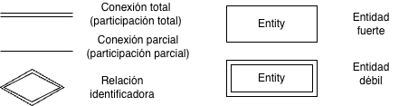
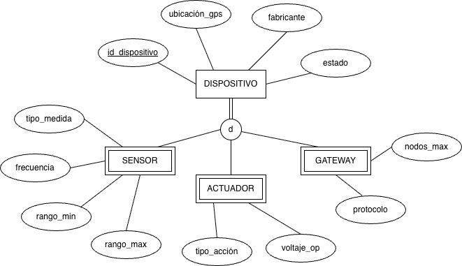
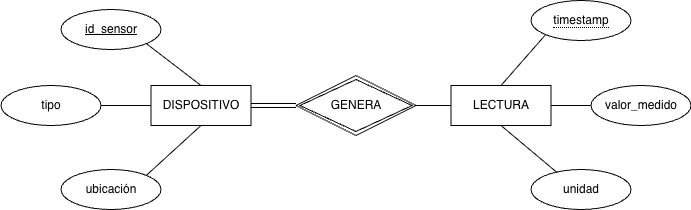
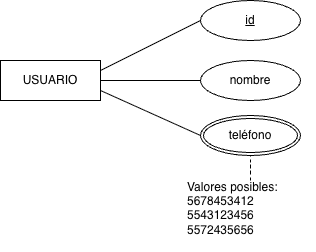
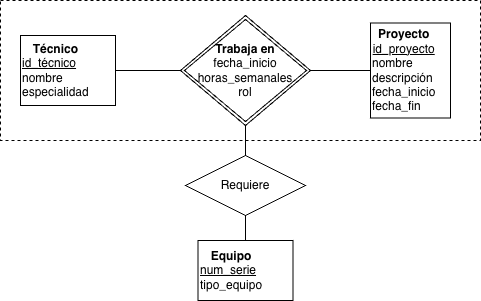
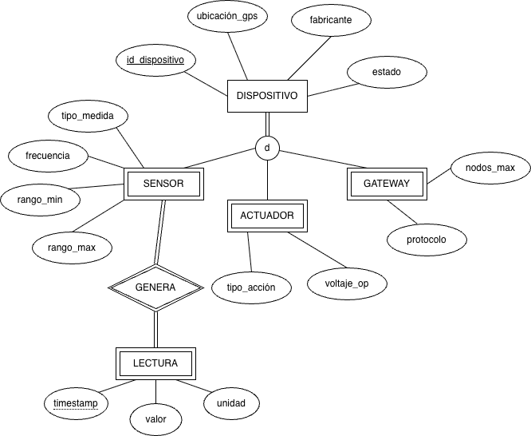

¿Modelo semántico?
¿Modelo semántico?
Un modelo semántico de datos es un modelo conceptual cuyo objetivo es capturar el significado del dominio: qué tipos de cosas existen, qué restricciones impone el mundo real y cómo se relacionan los conceptos, todo antes de pensar en tablas o índices.

¿Modelo semántico?
El modelo relacional plano puede representar cualquier cosa, pero a veces lo hace con dificultad.
Imagínense el archivo de un hospital con una única tabla PERSONA(id, nombre, especialidad, cedula_prof, num_expediente, alergias, turno, area).

¿Modelo semántico?

Forzar médicos, pacientes y administrativos en la misma tabla produce columnas con valores nulos para la mayoría de los registros e impide imponer restricciones por tipo, como que todo médico debe tener cédula profesional.
¿Modelo semántico?

Un modelo semántico resuelve esto con jerarquías, herencia y tipos especializados.
Esta es precisamente la idea de partida del Modelo Entidad-Relación Extendido (EER): enriquecer el modelo E-R clásico para describir el dominio con mayor claridad antes de transformarlo al modelo relacional.
El Modelo Entidad-Relación Extendido (EER)
El Modelo Entidad-Relación Extendido (EER)
El EER (Enhanced Entity-Relationship) es una extensión del E-R clásico que agrega mecanismos para representar mejor el significado de los datos mediante jerarquías, dependencias y estructuras conceptuales más expresivas.

El Modelo Entidad-Relación Extendido (EER)
Conserva los elementos básicos del modelo E-R y añade cuatro constructores fundamentales:

El Modelo Entidad-Relación Extendido (EER)

- Especialización / Generalización — jerarquías entre tipos de entidades con herencia.
- Atributos multivaluados — atributos que pueden tomar más de un valor por ocurrencia.
- Entidades débiles — entidades cuya identidad depende de otra entidad.
El Modelo Entidad-Relación Extendido (EER)
- Agregación — tratamiento de una relación como unidad conceptual de nivel superior.

El Modelo Entidad-Relación Extendido (EER)
Estas extensiones permiten distinguir con mayor precisión qué atributos son comunes, cuáles son propios de ciertos subtipos y qué restricciones dependen de la estructura del dominio, no solo de decisiones de implementación.

Notación base

- Rectángulo simple / doble → entidad fuerte / débil.
- Elipse simple / doble / discontinua → atributo simple / multivaluado / derivado.
- Atributo subrayado → atributo identificador; subrayado discontinuo → discriminante.
- Rombo simple / doble → relación normal / relación identificadora.
Notación base

- Línea doble / simple en la conexión entidad–relación → participación total / parcial.
Notación base


Especialización y generalización
Especialización y generalización
Una de las principales ventajas del EER es que permite representar jerarquías de tipos.

Especialización y generalización
En estas jerarquías aparece una superclase, que concentra lo común, y una o varias subclases, que añaden propiedades o relaciones particulares; las subclases heredan automáticamente los atributos y relaciones de la superclase.

Especialización y generalización

Especialización (top-down): se parte de una superclase y se identifican subgrupos con atributos o relaciones adicionales; cada subgrupo se convierte en subclase.
Especialización y generalización

Generalización (bottom-up): se parte de varias entidades con atributos comunes y se factorizan en una nueva superclase.
Ambos procesos producen el mismo resultado en el diagrama: una jerarquía.
Especialización y generalización
Restricciones de la jerarquía
Al definir una jerarquía, hay que responder dos preguntas fundamentales.
Disjunción — ¿puede una ocurrencia pertenecer a más de una subclase?
d— Disjunta: pertenece a lo sumo a una subclase.o— Superpuesta: puede pertenecer a varias.
Restricciones de la jerarquía

Completitud — ¿Toda ocurrencia de la superclase pertenece a alguna subclase?
- Total (línea doble): toda ocurrencia pertenece al menos a una subclase.
- Parcial (línea simple): algunas ocurrencias pueden no pertenecer a ninguna.
Ejemplo — red de sensores (disjunta, total)


Ejemplo — red de sensores (disjunta, total)
Todo dispositivo es exactamente uno de los tres tipos.
Los atributos comunes se definen una sola vez en la superclase.

Ejemplo: “persona” y subtipos
En un sistema educativo, un enfoque puramente relacional podría concentrar todo en una sola tabla de usuarios con muchas columnas opcionales (matrícula, área académica, salario, promedio, rol administrativo, etc.).

Ejemplo: “persona” y subtipos
Esto funciona técnicamente, pero expresa mal el dominio y dificulta distinguir qué atributos corresponden realmente a cada tipo de persona.
Ejemplo: “persona” y subtipos
Desde una perspectiva semántica, resulta mejor pensar en una entidad general PERSONA y en subtipos con propiedades particulares, de modo que el modelo refleje que no todas las personas comparten las mismas características.
Ejemplo: “persona” y subtipos
Ejemplo: “persona” y subtipos
- Tabla única de usuarios:
- Muchos campos opcionales.
- Menor claridad semántica.
- Modelo EER con
PERSONAy subtipos:- Atributos mejor distribuidos.
- Mejor alineación con el dominio educativo.
Tabla base: PERSONA
Tabla base: PERSONA
Esta tabla concentra lo que es común a todas las personas del sistema.
Tabla base: PERSONA
CREATE TABLE persona (
id_persona INT PRIMARY KEY,
nombre VARCHAR(100) NOT NULL,
apellido VARCHAR(100) NOT NULL,
fecha_nacimiento DATE,
correo VARCHAR(150),
telefono VARCHAR(50)
);Tabla base: PERSONA
| id_persona | nombre | apellido | fecha_nacimiento | correo | telefono |
|---|---|---|---|---|---|
| 1 | Ana | López | 2000-05-10 | ana.lopez@cua.uam.mx | 555-111-1111 |
| 2 | Juan | Alvarado | 1980-03-22 | jalvarado@cua.uam.mx | 555-222-2222 |
| 3 | Beatriz | Sánchez | 1975-11-15 | beatriz.sanchez@cua.uam.mx | 555-333-3333 |
Subtipo: ESTUDIANTE
Subtipo: ESTUDIANTE

Solo aplica a quienes tienen rol de estudiante, por ejemplo matrícula, promedio o programa.
Subtipo: ESTUDIANTE
CREATE TABLE estudiante (
id_persona INT PRIMARY KEY,
matricula VARCHAR(20) NOT NULL,
programa VARCHAR(100),
promedio DECIMAL(3,2),
fecha_ingreso DATE,
FOREIGN KEY (id_persona) REFERENCES persona(id_persona)
);Subtipo: ESTUDIANTE
| id_persona | matricula | programa | promedio | fecha_ingreso |
|---|---|---|---|---|
| 1 | A0123456 | Ingeniería en Sistemas | 9.1 | 2019-08-15 |
Subtipo: PROFESOR
Subtipo: PROFESOR
Solo aplica a quienes tienen rol docente, por ejemplo área académica, categoría o salario.

Subtipo: PROFESOR
CREATE TABLE profesor (
id_persona INT PRIMARY KEY,
area_academica VARCHAR(100),
categoria VARCHAR(50),
salario DECIMAL(10,2),
fecha_contratacion DATE,
FOREIGN KEY (id_persona) REFERENCES persona(id_persona)
);Subtipo: PROFESOR
| id_persona | area_academica | categoria | salario | fecha_contratacion |
|---|---|---|---|---|
| 2 | Tecnologías | Asistente | 45000.00 | 2025-01-10 |
Subtipo: ADMINISTRATIVO
Subtipo: ADMINISTRATIVO
Solo aplica a roles administrativos, por ejemplo área administrativa, puesto o tipo de contrato.
Subtipo: ADMINISTRATIVO
CREATE TABLE administrativo (
id_persona INT PRIMARY KEY,
area_admin VARCHAR(100),
puesto VARCHAR(100),
tipo_contrato VARCHAR(50),
salario DECIMAL(10,2),
FOREIGN KEY (id_persona) REFERENCES persona(id_persona)
);Subtipo: ADMINISTRATIVO
| id_persona | area_admin | puesto | tipo_contrato | salario |
|---|---|---|---|---|
| 3 | Servicios Escolares | Coordinadora de área | Tiempo completo | 38000.00 |
Reconstruir la vista de ESTUDIANTE con JOIN
Reconstruir la vista de ESTUDIANTE con JOIN
Para ver la información completa de estudiantes, combinamos lo común (persona) con lo específico (estudiante).
Esta es una forma típica de reconstruir una jerarquía cuando se ha mapeado a varias tablas.

Reconstruir la vista de ESTUDIANTE con JOIN
SELECT
p.id_persona,
p.nombre,
p.apellido,
p.correo,
e.matricula,
e.programa,
e.promedio,
e.fecha_ingreso
FROM persona p
JOIN estudiante e
ON p.id_persona = e.id_persona;Reconstruir la vista de ESTUDIANTE con JOIN
| id_persona | nombre | apellido | correo | matricula | programa | promedio | fecha_ingreso |
|---|---|---|---|---|---|---|---|
| 1 | Ana | López | ana.lopez@cua.uam.mx | A0123456 | Ingeniería en Sistemas | 9.1 | 2019-08-15 |
Reconstruir la vista de ESTUDIANTE con JOIN
El JOIN reconstruye el subtipo ESTUDIANTE como una vista unificada, sin columnas opcionales innecesarias.

Reconstruir la vista de PROFESOR con JOIN
Reconstruir la vista de PROFESOR con JOIN
SELECT
p.id_persona,
p.nombre,
p.apellido,
p.correo,
pr.area_academica,
pr.categoria,
pr.salario,
pr.fecha_contratacion
FROM persona p
JOIN profesor pr
ON p.id_persona = pr.id_persona;Reconstruir la vista de PROFESOR con JOIN
| id_persona | nombre | apellido | correo | area_academica | categoria | salario | fecha_contratacion |
|---|---|---|---|---|---|---|---|
| 2 | Juan | Alvarado | jalvarado@cua.uam.mx | Tecnologías | Asistente | 45000 | 2025-01-10 |
Reconstruir la vista de ADMINISTRATIVO con JOIN
Reconstruir la vista de ADMINISTRATIVO con JOIN
SELECT
p.id_persona,
p.nombre,
p.apellido,
p.correo,
a.area_admin,
a.puesto,
a.tipo_contrato,
a.salario
FROM persona p
JOIN administrativo a
ON p.id_persona = a.id_persona;Reconstruir la vista de ADMINISTRATIVO con JOIN
| id_persona | nombre | apellido | correo | area_admin | puesto | tipo_contrato | salario |
|---|---|---|---|---|---|---|---|
| 3 | Beatriz | Sánchez | beatriz.sanchez@cua.uam.mx | Servicios Escolares | Coordinadora de área | Tiempo completo | 38000 |
Vista unificada con tipo de persona
Vista unificada con tipo de persona
Para generar una vista que muestre todas las personas con su tipo y algunos atributos específicos, se puede usar LEFT JOIN y una columna derivada para clasificar cada fila.
Vista unificada con tipo de persona
SELECT
p.id_persona,
p.nombre,
p.apellido,
CASE
WHEN e.id_persona IS NOT NULL THEN 'ESTUDIANTE'
WHEN pr.id_persona IS NOT NULL THEN 'PROFESOR'
WHEN a.id_persona IS NOT NULL THEN 'ADMINISTRATIVO'
ELSE 'DESCONOCIDO'
END AS tipo_persona,
e.matricula,
e.programa,
pr.area_academica,
pr.categoria,
a.area_admin,
a.puesto
FROM persona p
LEFT JOIN estudiante e
ON p.id_persona = e.id_persona
LEFT JOIN profesor pr
ON p.id_persona = pr.id_persona
LEFT JOIN administrativo a
ON p.id_persona = a.id_persona;Vista unificada con tipo de persona
Este tipo de consulta muestra cómo, partiendo de un diseño semánticamente más claro (persona + subtipos), se pueden reconstruir “usuarios” con sus propiedades sin recurrir a una única tabla llena de campos opcionales.

Ejercicio

Se diseña la base de datos de una biblioteca universitaria.
Los usuarios son: estudiantes de licenciatura, estudiantes de posgrado, profesores e investigadores externos.
Ejercicio
Entidades débiles
Entidades débiles

Una entidad débil no posee atributos propios suficientes para identificar sus ocurrencias de forma única.
Depende de una entidad identificadora o fuerte tanto para su identidad como, en muchos casos, para su existencia.
Entidades débiles

El discriminante es el atributo —o conjunto de atributos— que, combinado con el identificador de la entidad propietaria, distingue cada ocurrencia.
La relación que las une es la relación identificadora y suele representarse con rombo doble.
Entidades débiles
Ejemplo


Entidades débiles
LECTURA es débil: su identificación completa requiere id_sensor + timestamp.
Dos sensores distintos pueden generar una lectura en el mismo instante; el timestamp solo no basta.

Entidades débiles
Cuándo reconocer una entidad débil — se cumplen las tres condiciones:
- No tiene identificador propio suficiente.
- Su ciclo de vida está ligado al de la entidad propietaria.
- Sus ocurrencias solo se distinguen dentro del contexto de esa entidad propietaria.
Atributos multivaluados
Atributos multivaluados

Un atributo multivaluado puede contener más de un valor para la misma ocurrencia.
Se representa con elipse doble.
Atributos multivaluados
El modelo relacional no los admite directamente en una sola columna si se quiere mantener una estructura normalizada, por lo que en el nivel conceptual se declaran como tales y su implementación se decide después.
Atributos multivaluados
Ejemplo — atributo multivaluado


Atributos multivaluados
Un usuario puede tener entre cero y varios teléfonos.

Atributos multivaluados
Distinción: multivaluado vs compuesto
Un atributo compuesto tiene partes con significado propio (dirección → calle, número, colonia).
En cambio, un atributo multivaluado tiene múltiples ocurrencias del mismo tipo (teléfono → varios números).

Atributos multivaluados
Un atributo puede ser ambas cosas a la vez.

Agregación
Agregación
La agregación permite tratar una relación —junto con las entidades que conecta— como una entidad de nivel superior, de modo que esa relación pueda participar en otras relaciones.
Agregación
Esto resuelve el caso en que “una relación entre A y B tiene a su vez una relación con C”, algo que el E-R básico expresa con mayor dificultad.
Agregación
Ejemplo — técnicos en proyectos de infraestructura:


Agregación
Los equipos no se asignan al técnico ni al proyecto por separado; se asignan a la combinación específica técnico+proyecto.
La agregación permite expresar esa idea sin introducir entidades artificiales innecesarias.
E-R simple vs. EER — mismo problema
E-R simple vs. EER — mismo problema

Dominio: red de sensores en una ciudad inteligente, en la que se tienen dispositivos de diferentes tipos y de los cuales los sensores generan lecturas.
Modelo E-R simple
-- Tabla única para todos los tipos de dispositivo
CREATE TABLE dispositivo (
id_disp VARCHAR(20) PRIMARY KEY,
tipo_disp VARCHAR(15) NOT NULL, -- 'sensor' | 'actuador' | 'gateway'
ubicacion_lat DECIMAL(9,6),
ubicacion_lon DECIMAL(9,6),
estado VARCHAR(15),
fabricante VARCHAR(50),
-- atributos de SENSOR (NULL para actuadores y gateways)
tipo_medida VARCHAR(30),
frecuencia_hz FLOAT,
rango_min FLOAT,
rango_max FLOAT,
-- atributos de ACTUADOR (NULL para sensores y gateways)
tipo_accion VARCHAR(30),
voltaje_op FLOAT,
-- atributos de GATEWAY (NULL para sensores y actuadores)
protocolo VARCHAR(20),
nodos_max INTEGER
);
-- Lecturas generadas por cualquier dispositivo
CREATE TABLE lectura (
id_disp VARCHAR(20) REFERENCES dispositivo(id_disp),
ts TIMESTAMP NOT NULL,
valor FLOAT,
unidad VARCHAR(10),
PRIMARY KEY (id_disp, ts)
);Modelo E-R simple
Problemas:
NULLmasivos.- Restricciones de dominio no expresables con claridad.
- Extender el esquema obliga a modificar la tabla completa.
Modelo E-R simple
| id_disp | tipo_disp | frecuencia_hz | tipo_accion | protocolo | ... |
|---|---|---|---|---|---|
| S001 | sensor | 1.0 | NULL | NULL | ... |
| A001 | actuador | NULL | abrir_valvula | NULL | ... |
| G001 | gateway | NULL | NULL | LoRa | ... |
Modelo E-R simple
El esquema no impide asignar tipo_accion a un sensor, ni impone que todo sensor tenga frecuencia_hz.
Esas reglas tendrían que resolverse fuera del modelo conceptual, por ejemplo en código de aplicación.
Modelo EER equivalente

Se generan cinco tablas: una para la superclase, una por cada subclase y una para LECTURA, que se modela como entidad débil.
Esta organización reduce nulos y refleja mejor las restricciones del dominio.
Modelo EER equivalente
-- Superclase: atributos comunes a todos los tipos
CREATE TABLE dispositivo (
id_dispositivo VARCHAR(20) PRIMARY KEY,
ubicacion_lat DECIMAL(9,6) NOT NULL,
ubicacion_lon DECIMAL(9,6) NOT NULL,
estado VARCHAR(15) NOT NULL,
fabricante VARCHAR(50),
fecha_inst DATE
);Modelo EER equivalente
-- Subclase SENSOR: solo sus atributos propios + referencia a superclase
CREATE TABLE sensor (
id_dispositivo VARCHAR(20) PRIMARY KEY
REFERENCES dispositivo(id_dispositivo)
ON DELETE CASCADE,
tipo_medida VARCHAR(30) NOT NULL,
frecuencia_hz FLOAT NOT NULL,
rango_min FLOAT,
rango_max FLOAT
);Modelo EER equivalente
-- Subclase ACTUADOR
CREATE TABLE actuador (
id_dispositivo VARCHAR(20) PRIMARY KEY
REFERENCES dispositivo(id_dispositivo)
ON DELETE CASCADE,
tipo_accion VARCHAR(30) NOT NULL,
voltaje_op FLOAT NOT NULL
);Modelo EER equivalente
-- Subclase GATEWAY
CREATE TABLE gateway (
id_dispositivo VARCHAR(20) PRIMARY KEY
REFERENCES dispositivo(id_dispositivo)
ON DELETE CASCADE,
protocolo VARCHAR(20) NOT NULL,
nodos_max INTEGER
);Modelo EER equivalente
-- Entidad débil LECTURA: identificada por (id_dispositivo + ts)
CREATE TABLE lectura (
id_dispositivo VARCHAR(20) NOT NULL
REFERENCES sensor(id_dispositivo)
ON DELETE CASCADE,
ts TIMESTAMP NOT NULL,
valor FLOAT NOT NULL,
unidad VARCHAR(10),
calidad_señal FLOAT,
PRIMARY KEY (id_dispositivo, ts)
);Modelo EER equivalente
Para insertar un sensor se insertan dos filas: primero en dispositivo y luego en sensor.
Por las restricciones definidas, no puede existir una fila en sensor sin su correspondiente fila en dispositivo.
Modelo EER equivalente

Para ver todos los datos de un sensor se hace JOIN; esta es la forma habitual de reconstruir una jerarquía mapeada a varias tablas.
Modelo EER equivalente
SELECT d.id_dispositivo, d.ubicacion_lat, d.ubicacion_lon,
s.tipo_medida, s.frecuencia_hz
FROM dispositivo d
JOIN sensor s ON d.id_dispositivo = s.id_dispositivo
WHERE d.id_dispositivo = 'S001';Limitaciones que el EER suaviza
- Jerarquías de tipos → especialización/generalización.
NULLmasivos → subclases con solo sus atributos propios.- Dependencias de existencia → entidades débiles.
- Atributos con múltiples valores → atributos multivaluados.
- Relaciones que participan en relaciones → agregación.
Limitaciones que el EER suaviza
Las tres estrategias de mapeo de jerarquías al modelo relacional
Una vez definido el modelo EER, la jerarquía debe traducirse a tablas.
Existen varias estrategias; cada una tiene ventajas y costos.

Las tres estrategias de mapeo de jerarquías al modelo relacional
Estrategia 1 — Una tabla para toda la jerarquía: todos los atributos de superclase y subclases en una sola tabla con una columna discriminante.
Ventaja: sin JOIN.
Desventaja: muchos NULL.
Las tres estrategias de mapeo de jerarquías al modelo relacional
Estrategia 2 — Tabla de superclase + tabla por subclase: la superclase tiene su tabla; cada subclase tiene la suya con solo sus atributos propios, ligada por el identificador.
Ventaja: modelo más limpio y normalizado.
Desventaja: se requieren JOIN para reconstruir la entidad completa.
Las tres estrategias de mapeo de jerarquías al modelo relacional
Estrategia 3 — Solo tablas de subclases: los atributos de la superclase se duplican en cada subclase.
Ventaja: sin JOIN para consultar una subclase específica.
Desventaja: redundancia y necesidad de UNION para consultar toda la superclase.
Representación tabular del E-R y EER
Representación tabular del E-R y EER
Una base de datos diseñada con E-R o EER puede representarse finalmente como una colección de tablas.

Representación tabular del E-R y EER
En general, las entidades fuertes se convierten en tablas propias, las entidades débiles incorporan la clave de su entidad fuerte, los atributos compuestos se descomponen en atributos simples, los multivaluados suelen requerir tablas adicionales y las relaciones se representan con tablas que incorporan las claves de las entidades participantes.
Representación tabular del E-R y EER
En otras palabras, el EER no sustituye al modelo relacional: lo prepara.
Primero ayuda a entender mejor el dominio; después, ese conocimiento se traduce a tablas según la estrategia de diseño elegida.

Actividad — App para escribir música
Actividad — App para escribir música
Definir el modelo EER para una aplicación de escritura de música.

Entregable